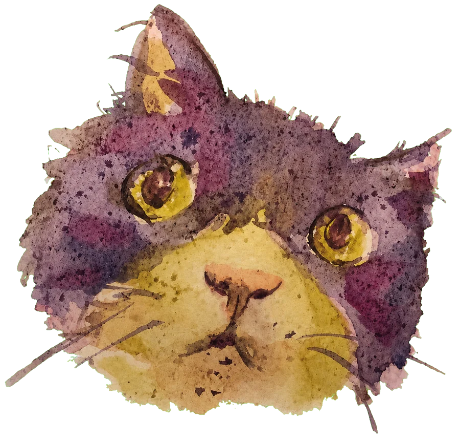

立體水彩貓
貓的瞳孔會先瞄向游標或你手指碰的地方，頭再慢慢跟上。拖曳可以轉一整圈，放開會停在那個角度；按「跟隨游標」回到看著你的狀態。
立體版 ·

原圖
角度
-35°
正面
20°
35°
側面
背面
跟隨游標
用手機傾斜來轉
自動旋轉
待機動作
只看筆觸
拆開
調整
每一筆是一片獨立的小網格，貼在頭的表面上、筆尖翹起來，大小與疏密在整顆頭上一致；重疊的地方由比較上層的那一筆說了算，所以看得出一筆壓著一筆。
每個像素的顏料濃度，依當下看得到的筆觸分攤。正面時每筆取的都是原圖同一點，所以跟原圖一樣；轉到側面時每筆改用自己展開的那一小塊，不會被曲面拉長。
待機時會眨眼、呼吸、抖耳朵、鬍鬚輕晃，沒人理牠時偶爾自己瞄別處。背光的那一側疊了一層偏冷的淡彩當陰影。跑不順時會自動調降畫質。
眼睛拆成眼眶、虹膜、瞳孔、反光、眼皮。眼皮的顏色取自眼睛上方的毛；反光是補畫的白點，固定不跟著瞳孔動。瞳孔是獨立的一片，會在眼眶裡移動，超出眼眶的部分被蓋住；虹膜上原本畫著瞳孔的地方，用四周的黃色補起來（這塊是補畫的）。
耳朵是獨立的兩片，根部在頭頂的毛後面，往前傾、中間凹；頭和耳朵的筆觸各自只畫自己的範圍。
後腦、耳背是補的：原圖沒有畫。形狀是把輪廓往後鼓起來，顏色是從正面的紫色毛裡搬過來的小塊：正面是毛的位置就原地延續過去，是臉的位置就把四周的毛往中間收。
鼻子和嘴巴拆成四層：赭黃色的底、粉色鼻頭、鼻子的深色線、人中與嘴巴的線。鼻頭浮在最前面，待機時會嗅一下：鼻頭撐大、兩塊鬍鬚墊鼓起來、鬍鬚往前張開。嘴巴不會張開，原圖沒有畫口腔。
推測的部分：頭的隆起、口鼻與耳朵的深度、每一筆的形狀與走向都是重新安排的，不是原作的筆觸。側臉的輪廓（口鼻凸出多少）完全是猜的。